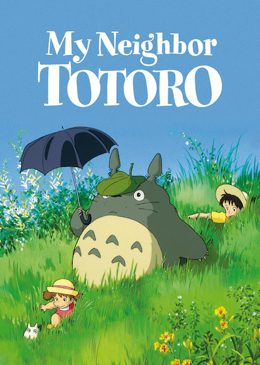
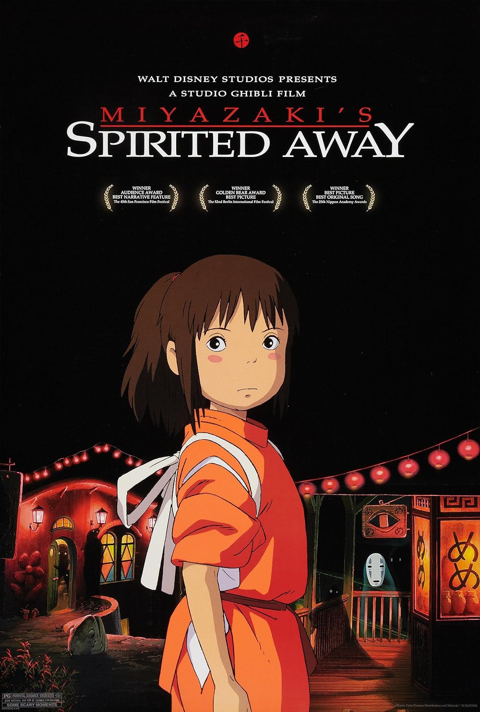

Filmes Populares

Meu Amigo Totoro
 8.1
8.1
 Favoritar
Favoritar
Quando duas meninas se mudam para o campo para ficar perto de sua mãe doente, elas têm aventuras com os maravilhosos espíritos da floresta que moram nas proximidades.
O Castelo Animado
8.2
Favoritar
Uma jovem sem autoconfiança é amaldiçoada com um corpo envelhecido por uma bruxa odiosa. Sua única chance de quebrar o feitiço é um jovem feiticeiro em um castelo itinerante.

A Viagem de Chihiro
8.6
Favoritar
Uma garota muda de cidade com seus pais contra a sua vontade. Durante a viagem, eles decidem pegar um atalho e se perdem, chegando a um estranho edifício, onde adentrarão um misterioso mundo de monstros e espíritos.